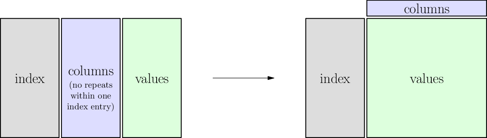
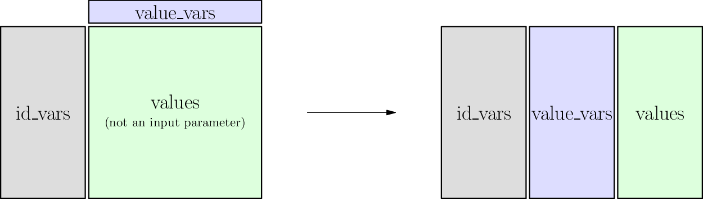
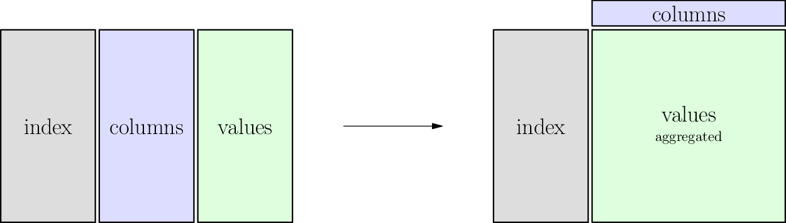

6. Single-Table Verbs¶
See also the slides that summarize a portion of this content.
The function we’ll discuss today got the name “verbs” because coders in the R community developed what they call a “grammar” for data transformation, and the function we’ll look at today are some of that grammar’s “verbs.” The origins in R are unimportant for our course; what matters is that verbs are things you can do with tables of data.
6.1. Tall and Wide Form¶
The following two tables show the same data, but in different forms. One is tall while the other is wide.
Tall form:
First |
Last |
Day |
Sales |
|---|---|---|---|
Amy |
Smith |
Monday |
39 |
Amy |
Smith |
Tuesday |
68 |
Amy |
Smith |
Wednesday |
10 |
Bob |
Jones |
Monday |
93 |
Bob |
Jones |
Tuesday |
85 |
Bob |
Jones |
Wednesday |
0 |
Wide form:
First |
Last |
Monday |
Tuesday |
Wednesday |
|---|---|---|---|---|
Amy |
Smith |
39 |
68 |
10 |
Bob |
Jones |
93 |
85 |
0 |
Although it’s not part of MA346, it’s worth mentioning that: In the famous paper Tidy Data, data scientist and R developer Hadley Wickham calls tall form “tidy data” and defines it as having exactly one “observation” per row. (What an observation is depends on what you’ve gathered data about. In the first table above, an observation seems to be the amount of sales by a particular person on a particular day.) His rationale comes from people who’ve studied databases, and if you’ve taken CS350 at Bentley, you may be familiar with the related concept of database normal forms. The tidyverse is a collection of R packages that help you work smoothly with data if you organize it in tidy form.
Big Picture
The tall form is typically more useful when computing with data, because we often want to filter for just the rows we care about. So the more separated the data is into rows, the easier it is to select just the data we need.
The wide form is typically more useful when presenting data to humans. Although this tiny table is just an example, data in the real world has far more rows, meaning that the tall form will not fit on a page. Reshaping it into a rectangle that does fit on one page is usually preferred.
Pivot is the verb that converts tall form to wide form.
Melt is the verb that converts wide form to tall form.
Let’s investigate them.
6.2. Pivot¶
As just stated, pivot is the verb for converting tall-form data to wide-form data. We’ll give a precise definition later on. Let’s first get some intuition for how it works.
6.2.1. The general idea¶
The big picture idea of the pivot operation is illustrated here:
We will make that more precise later, but it can serve as a reference for the general idea.
The table below shows the same table from above, in “tall” form. Drag the slider back and forth to watch the transition from tall to wide form. While you do so, watch each of these parts of the table:
The gray cells:
These are the unique IDs used in both shapes, tall or wide.
They function like row headers.
In pandas, we call them the
indexof the pivot.
The blue cells:
The most important change happens here.
In tall form they’re data, but in wide form they’re column headers.
In pandas, we call them the
columnsof the pivot (because they turn into columns when we pivot).
The green cells:
These contain the values, typically numbers.
They do not change, but merely move to sit in the appropriate place in each table.
In pandas, we call them the
valuesof the pivot.
(This animation can be viewed in its own page here.)
from IPython.display import IFrame
IFrame( 'https://nathancarter.github.io/dataframe-animations/pivot.html?hide-title=true',
width=700, height=800 )
6.2.2. The precise definition¶
We can state precisely what df.pivot() does by building on what we’ve learned in previous chapters. We can describe both the requirements and guarantees of the pivot function, and can do so in terms of functions and relations.
Requirements of
df.pivot():The table to be pivoted must express a function from at least two input columns (called
indexandcolumns, above) to one output column (calledvalues, above).It is acceptable for the
indexto comprise more than one column, as in the example above.Recall that for it to be a function, inputs cannot be repeated, because that could connect them with more than one output.
Guarantees of
df.pivot():Each value from the
indexcolumns will appear only once in the resulting table.A new column will be created for each unique value in the old
columnscolumn.The
valuescolumn will have been removed.For each
indexentry \(i\) in the original DataFrame and eachcolumnsentry \(c\), if \(v\) is the unique value associated with it, then the new table will contain a row withindex\(i\) and with \(v\) in the column entitled \(c\).
You can think of df.pivot() as turning one function into many. In the example above, it worked like this:
Original table
One function
Inputs: first name, last name, day
Output: sales
Result of pivoting
First function
Inputs: first name, last name
Output: Monday sales
Second function
Inputs: first name, last name
Output: Tuesday sales
Third function
Inputs: first name, last name
Output: Wednesday sales
6.2.3. Purpose of pivoting¶
Recall that pivoting just turns “tall” data into “wide” data. And tall form is how you typically store data when doing an analysis, because of the ease of processing tall data using code, while wide form is often more attractive for a human reading data from a table. So the purpose of pivoting is typically when you’re generating reports for human consumption.
6.3. Melt¶
The reverse operation to a pivot is called “melt.” This comes from the fact that wide data “falls down” (like the drips of a melting icicle perhaps?) into tall form. The idea is summarized in the following picture, but you can watch it happen in the animation further below.
6.3.1. The genreal idea¶
The big picture idea of the pivot operation is illustrated here:
We will make that more precise later, but it can serve as a reference for the general idea.
Just as pivoting was usually to turn data stored for computers into data readable by humans, melting is for the reverse. If you’re given data in wide form, but you want to prepare it for analysis, you often want to convert it into tall form to make subsequent data processing code easier.
For example, let’s say we were given the table below of students’ performance on various exams. (Obviously, this is fake data.) If we would rather view each exam as a separate observation, so that each row is a single exam score, we can melt the table.
Drag the slider to see the melting in action. While you do so, watch the following parts of the table:
The gray cells:
Because we’ll be spreading a student’s data out over more than one row, these will be copied.
These function as unique IDs for each row, so pandas calls these columns the
id_vars.
The blue cells:
These are the titles for each of several different functions.
Each function takes a student as input and gives a type of exam score as output.
They will change from being column headers to being values in the table, so pandas calls them the
value_vars.
The green cells:
Each column represents a separate function (the first maps students to SAT score, the second maps students to ACT score, and the third maps students to GPA).
Because we’re collecting all scores into a single column, these will stack up to become just one column.
(This animation can be viewed in its own page here.)
from IPython.display import IFrame
IFrame( 'https://nathancarter.github.io/dataframe-animations/melt.html?hide-title=true',
width=700, height=900 )
6.3.2. The precise definition¶
Unsurprisingly, the requirements and guarantees of the melt operation are the reverse of those from the pivot operation.
Requirements of
df.melt()The
id_varsare one or more columns that contain unique identifiers for each row.The
value_varscolumns are each a function from theid_vars. (That is, no value inid_varsappears twice.)
Guarantees of
df.melt()For each value \(i\) in the
id_varscolumn and for each column \(c\) in thevalue_vars, if we write \(f\) for the function that column represents, then the new table will contain a row with ID \(i\) and values \(c\) and \(f(c)\).This new table will therefore be a function from the \(i\) and \(c\) columns to the \(f(c)\) column. (By default, pandas calls those two new columns “variable” and “value” but you can give them more meaningful names.)
There are no other rows in the resulting table besides those just described.
6.4. Pivot tables¶
All this talk of pivoting should remind you of the very common Excel operation called “pivot table.” It is very much like the pivot operation, with two differences. First, it doesn’t require the table to represent a function. Second, it does require you to explain how values will be summarized or combined. Naturally, pandas suppoorts this operation as well, and it’s extremely useful.
If df.pivot() makes a tall table wide, then df.pivot_table() makes a tall table sort of wide. We’ll see why below.
6.4.1. The general idea¶
The big picture idea of the pivot operation is illustrated here:
We will make that more precise later, but it can serve as a reference for the general idea.
In the table shown below, notice that if we try to consider the gray and blue columns as inputs and the green column as outputs, the relationship is not a function. If it were, we could pivot on the blue column, and the green cells would rearrange themselves just as they did in the first animation up above. But try dragging the slider below slowly and you will see that some green cells collide.
For instance, Amy Smith has two different sales to the same customer, Facebook, and Bob Jones has two different sales to the same customer, Amazon. So we cannot simply create a Facebook column and an Amazon column and rearrange the sales data into them. When two sales figures need to be placed under the same customer heading, we need some way to combine them.
The way the table below combines cells is by adding, which is a very sensible thing to do with sales data for a customer. You can see that the code asks this by specifying the aggregation function (or aggfunc) to be “sum.”
This is why a pivot_table operation doesn’t make a table that’s as wide as a pivot might, because some cells are combined, meaning that the overall table reduces in size.
(This animation can be viewed in its own page here.)
from IPython.display import IFrame
IFrame( 'https://nathancarter.github.io/dataframe-animations/pivot-table.html?hide-title=true',
width=800, height=800 )
6.4.2. The precise definition¶
I will alter the precise definition of df.pivot() as little as possible when creating this definition of df.pivot_table().
Requirements of
df.pivot_table():The table to be pivoted can express any relation among least three columns (called
index,columns, andvalues, above).It is acceptable for the
indexto comprise more than one column, as in the example above. (Same as fordf.pivot().)We must have some aggregation function (called
aggfunc, above) that can combine many entries from thevaluescolumn into one. In the example above, we used “sum.” Let’s call this function \(A\).
Guarantees of
df.pivot_table():Each value from the
indexcolumns will appear only once in the resulting table. (Same as fordf.pivot().)A new column will be created for each unique value in the old
columnscolumn. (Same as fordf.pivot().)The
valuescolumn will have been removed. (Same as fordf.pivot().)For each
indexentry \(i\) in the original DataFrame and eachcolumnsentry \(c\), if \(v_1,v_2,\ldots,v_n\) are the various values associated with it, then the new table will contain a row withindex\(i\) and with \(A(v_1,v_2,\ldots,v_n)\) in the column entitled \(c\).
6.5. Stack and unstack¶
There are two other single-table verbs that you studied in the DataCamp review before today’s reading. These are less common because they apply only in the context where there is a multi-index, either on rows or columns. But we give animations of each below to help the reader visualize them.
The stack operation takes nested column indices (which are arranged horizontally) and makes them nested row indices (which are arranged vertically). This is why it’s called “stack,” because it arranges the headings vertically. Unstack is the same operation in reverse.
When applying these operations, it is possible to choose which level of a multi-index gets stacked or unstacked. The two animations below use two different levels, so that you can compare the differences.
6.5.1. Animation for unstack/stack at level 1¶
The level of a stack/unstack operation refers to which level of the multi-index will be moved. The animation below shows df.unstack( level=1 ) when you move the slider from left to right, so level 1 of the row multi-index (the weeks) moves up to become part of the column index. It is always placed as an inner index, but this can be changed afterwards with df.swaplevel().
The reverse operation is exactly df.stack( level=1 ), because it moves level 1 from the column headings back to be inside the row headings instead.
(This animation can be viewed in its own page here.)
from IPython.display import IFrame
IFrame( 'https://nathancarter.github.io/dataframe-animations/stack-1.html?hide-title=true',
width=800, height=900 )
6.5.2. Animation for unstack/stack at level 0¶
The level of a stack/unstack operation refers to which level of the multi-index will be moved. The animation below shows df.unstack( level=0 ) when you move the slider from left to right, so level 0 of the row multi-index (the months) moves up to become part of the column index. It is always placed as an inner index, but this can be changed afterwards with df.swaplevel().
The reverse operation is therefore actually a combination of df.stack() (which would put the months inside the weeks) and df.swaplevel() (which would fix that) all in one.
(This animation can be viewed in its own page here.)
from IPython.display import IFrame
IFrame( 'https://nathancarter.github.io/dataframe-animations/stack-0.html?hide-title=true',
width=700, height=900 )